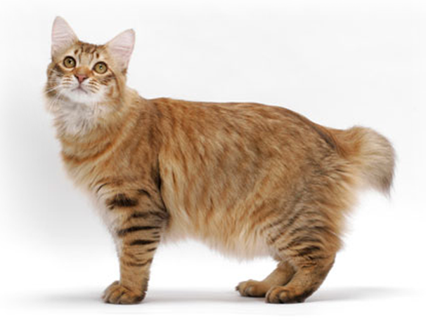
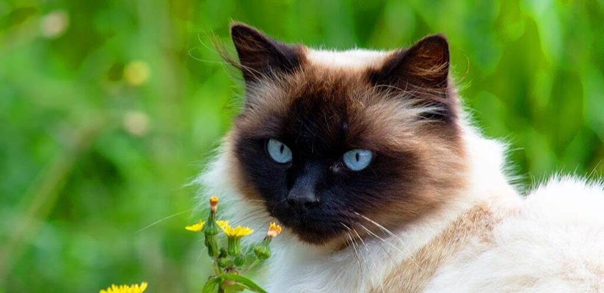

Welcome to the information page! Here you will get information on the cats listed below.
You will be told their names, their life spans, living needs, care and given images of them.
| Names: | American Bobtail | Bengal | Maine Coon | Exotic Shorthair | Himalayan | Scottish Fold |
|---|---|---|---|---|---|---|
| Images: |  | |
|
|
 | |
| Life Span: | 13-15 Years | 9-15 Years | 10-13 Years | 8-15 Years | 9-15 Years | 11-14 Years |
| Living Needs: | American bobtails love to be loved and to give love in return. They need a lot of human interaction and don't do well when left alone for a long time. These cats get along well with everyone. | Bengal cats are happiest when near you. They need to have lots of things to do and especially climb. There should be at least one cat tree along with plenty of toys to keep them entertained while you are away. If you spend a long time aaway from home, a second cat is a good idea to keep this kitty amused and busy. This kitty is high prey drive so a carpeted perch to give the kitty a comfortable viewing spot would be a great idea. Do not leave breakable items where your kitty can reach. | They need an affectionate, loving family with time to play and willingness to include this kitty in all aspects of day-to-day life. These kitties can be left alone for periods of time but they won't be happy about it. These kitties can become sad and anxious if left alone regularly. Most Maine Coons like to play in water. They love to communicate and volcalize to their humans. | These cats are only focused on their owners. They are low-maintenance that doesn't require a lot of space. They are social cats and aren't a fan of being alone. Providing interactive toys and maybe even a kitty playmate would be a good idea. These cats are moderately active and require a cat tree to keep them stimulated. Rotate out toys every few weeks so your kitty doesn't get bored. A padded window seat for your kitty will let them spy on the outside world and chatter with birds. | These kitties aren't terribly athletic and aren't big jumpers. They would enjoy a good cat tree and they may really love a cat hammock by the window. They are great lap cats which is good for combing out their coats. Because these kitties have thick fur you should keep them in air-conditioned spaces when it is hot outside. If you intend to leave your kitty alone for the day leave some felt mice or plastic balls so he doesn't get bored. | They require adequate mental and environmental enrichment. They should have scratching posts, vertical and horizontal spaces including perches and hiding places, a variety of toys that should be rotated weekly, and structured social and play sessions with family. They are not super active. |
| Care: | You will need to brush this breed once or twice a week to keep their coats smooth and healthy. Regularly trim your cat's nails and keep their ears clean as well. You should also brush their teeth a couple times a week as well. This breed should also be kept mentally engaged with lots of interactive toys. Socializing this cat early will make is easier to get along with unfamiliar faces. A diet of high-quality cat food recommended by your vet is highly advised. | Happy Bengal cats need mental stimulation. When they are young introduce your kitty to other people, children, animals, the car, and leashes/harnesses for outdoor exploration. Provide plenty of cat toys and rotate them out every few weeks to make sure your kitty doesn't get bored. Brush them once a week to keep their coat in good condition and an occasional bath might be something they look forward to. Make sure to keep regular tooth and nail care. | Their coats are heavy and shaggy. They require maintenance brushing to ensure it doesn't get tangled or matted. They will need regular, dedicated grooming and will require from weekly to monthly bathing. Usually their coats are silky smooth but once they start looking greasy or stringy they should be given a bath. These kitties keep the same activity schedule of most cats with long hours of sleep and playful bouts of jumping and running through the house. Cat toys and cat trees can help them work out some of that energy. These kitties are easily trainable. They should be socialized early on and fed high-quality cat food and a monitored diet. | They require a weekly brushing to remove dirt and shedding hair. Start grooming sessons with your car when they are a kitten. They like to spend time in your lap and can entertain themselves pretty well. | Since this kitty has a thick coat it is important to groom him daily to prevent matting and tangles, and keep shedding (relatively) under control. While they are young get them used to water. These kitties have flat faces causing overflow of tears call epiphora. You will need to wipe their faces regularly with a tissue to remove the staining. | They shed but require a weekly combing to keep lush coats in great shape. They love and require attention and to be challenged with new toys and activities. Make sure they are litter trained and is kept clean. The ears of these kitties should be checked regularly for earwax buildup and signs of infection. |